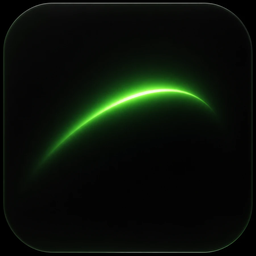

free · open source · apache-2.0SilentMesh Lure
Planted credentials that give the attacker away.
A quiet safety net for any network, from a home router to a data centre. Free for everyone. Attackers often get in with a stolen VPN or jump-host login, then hunt for more saved passwords. Lure plants fake ones. If anyone tries to use one, you get an alert naming the file and where you planted it.
What it plants
Each bait carries its own fake username, so an alert tells you exactly which file was found.
passwords_FINAL_v2.xlsx
A real workbook from IT Support, months old: NAS, vCenter and intranet logins, a Notes column, a "temporary" shared admin (TODO: rotate after the audit) and an "Old - do not use" sheet.
Plant on: a file share or a Documents folderDO NOT DELETE - JUMP-SRV-01.rdp
A saved Remote Desktop connection to the admin jump server, username filled in.
Plant on: an admin workstation desktopInfosys support VPN (old).ovpn
A vendor remote-support VPN profile with its login in a comment, and a hint about the RDP file.
Plant on: a jump host or a vendor laptop sharepasswords.csv
A browser password export, the kind left in Downloads.
Plant on: a user's Downloads folder.git-credentials
A git credential store. Real git sends this login.
Plant on: a developer or admin home directoryRe- Infosys remote access.eml
An email that leaks a temporary login and points at the VPN profile and the spreadsheet.
Plant on: a mailbox export or Documents folderThe files point at each other, so each one found makes the next more believable. Usernames look like real accounts, files are backdated months, and the vocabulary fits the place: --profile it (default), office, home, bank, hospital or plant. At home, a Raspberry Pi makes a perfect listener.
A seventh file, manifest.json, maps usernames to baits (no passwords). Keep it only on the listener host: anyone who reads it knows which logins are fake.
How it works
Generate
Point
lure generateat a spare IT-side machine that nobody legitimately logs into.Plant
Drop the bait files on admin desktops, file shares, home directories and jump hosts. No agent, nothing to install on them.
Listen
Run
lure listenon the listener host. A login attempt with a bait credential sends you an alert.
Why it is different
Alerts on use, not on open
Opening, copying, backing up or antivirus-scanning a bait file does nothing. Only a login attempt with a bait credential fires an alert.
Nothing is sent to us
The listener alerts only your own webhook, syslog or terminal. No SilentMesh service is involved.
Light to run
Tested on Linux (x86-64 and ARM, including Raspberry Pi) and Windows. Python 3.9+ standard library only.
Quiet by design
The same source, service and username alert once per 10 minutes, with at most 20 alerts per 10 minutes overall, so one attacker cannot flood your pager.
Quick start
Install (Python 3.9 or later, Linux, Windows or Raspberry Pi). On Kali, Debian and Ubuntu get pipx first with sudo apt install pipx:
pipx install --pip-args=--pre silentmesh-lureSee it work in under a minute. The demo plants baits on localhost, opens the dashboard and plays an attacker:
lure demoThen deploy for real. init writes baits pointing at this machine and tells you the next step; start the listener, then prove it from another terminal:
lure init
lure listen --manifest baits/manifest.json --ui
lure test --manifest baits/manifest.jsonPlant the files from baits/ where an intruder would look and keep manifest.json on the listener host. Alerts to Slack, Teams or syslog: add --webhook URL or --syslog HOST:514 to lure listen. No install? uvx silentmesh-lure demo runs it once.
How alerts are graded
- highA bait username was used. Someone found a planted file and tried it.
- mediumSomething connected to the listener host without a bait username. Nothing legitimate should connect at all, so it is still worth a look. A scanner you run yourself is the usual cause.
Data handling
Lure runs entirely on your own machines. The listener records the connecting IP and port, the service, the time and the username offered, and sends that only to your sinks. Passwords are never read or stored. SilentMesh receives no data.
Use responsibly
Only plant baits on systems you own or are authorised to protect. Whoever runs the listener controls the data it records (IP addresses and usernames can be personal data, for example under India's DPDP Act 2023) and handles it under their own law.
Limits
- It covers the IT side: workstations, jump hosts and shares. Do not plant baits on the control network, and do not point a bait at a real system.
- It is a beta. It catches people who find and use credentials, not an attacker who never touches the baits.
- The VPN login is encrypted, so VPN baits are told apart by their own listener port.
Running an industrial site? Go further.
Lure is free for everyone. The full product places decoy controllers on the plant network itself, over Modbus/TCP, S7comm, IEC 60870-5-104, DNP3, OPC UA and SMB. It sits off the control path and fails open.
Deceive, never disrupt.